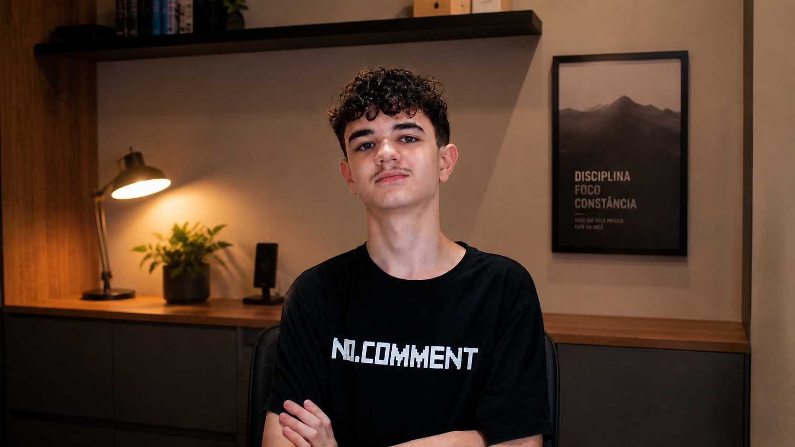

01
 Automação e organização
Em andamento
Automação e organização
Em andamento
Automação e organização

01 — PORTRAITBack-end · Softwares
Desenvolvedor de Software | Programador
Aprendendo e criando todos os dias.
Meu nome é Victor Botelho. Sou desenvolvedor de software com foco em back-end utilizando Node.js e C++.
Tenho 16 anos e gosto de transformar ideias em projetos, próprios ou open source, sempre priorizando organização, qualidade e boas práticas.
Realizo a maior parte dos meus estudos na Alura e já concluí cursos de Node.js, Bancos de dados e outras tecnologias.
Desenvolvo projetos em C++, como a minha própria linguagem de programação, máquina virtual e outras ferramentas.
Selected work · 2024—2026
Ferramentas abertas construídas entre o alto nível de uma API e o baixo nível de uma máquina virtual.
Automação e organização
Uma linguagem de programação com foco em flexibilidade e modularidade.
Implementação da minha própria linguagem de programação Bre. O processo inclui análise léxica e sintática, geração de AST e compilação para bytecode Wave, executado pela BreVM. O projeto busca oferecer uma linguagem simples, modular e embutível.
Máquina virtual de arquitetura híbrida, baseada em pilha e registradores, com execução de bytecode Wave e uma base voltada à implementação e ao embedding em outras aplicações.
 Luau gameplay ↔ Node.js APIs
Luau gameplay ↔ Node.js APIs
Um simulador de vida desenvolvido em Luau para a plataforma Roblox, com partes externas e APIs próprias construídas utilizando Node.js.
Bot interativo para Discord desenvolvido com tecnologias modernas do ecossistema Node.js, incluindo discord.js, Canvas, Express e APIs próprias. O projeto foi fundamental para o surgimento do Disfox JS e passou por diversas reformulações, incluindo a migração de Node.js para Deno.
 Deno
Deno
 Express
Express
 Canvas
Canvas
 Disfox
Disfox
Portfólio pessoal desenvolvido para apresentar meu trabalho, conhecimentos, projetos e trajetória como desenvolvedor. O projeto prioriza uma experiência moderna, interativa e responsiva, com direção visual própria e desenvolvimento de interface realizado com assistência de IA.
Site oficial de documentação do framework Disfox, desenvolvido para centralizar guias, referências, changelogs e outras informações relevantes para desenvolvedores. Construído com Docusaurus e atualmente hospedado na Vercel.
 Docusaurus
Docusaurus
 Vercel
Vercel
Um simples EventLoop construído com Lua 5.5. Com emissão e listening para eventos.
EventLoop construído com Luau 0.711, derivado do LuaLooper.
Stack & tools
Um repertório em formação contínua, orientado a back-end, runtime e engenharia de ferramentas.
As linguagens que uso para transformar arquitetura em software executável.
JavaScript
TypeScript
C++
Luau
Lua
Python
HTML5
CSS3
Ecossistemas e tecnologias que utilizei para construir projetos e avançar em meus estudos.
Node.js
Básico
Deno
Fastify
PostgreSQL

Express
Git

GitHub
VS Code
Visual Studio
CMake
Clang / LLVM
Docusaurus
Education archive
Formação formal e estudos que constroem a base por trás de cada projeto.
Formação escolar em andamento em São Paulo, conciliada com estudo independente de engenharia de software e ciência da computação.
Trilha na Alura de desenvolvimento com JavaScript
Curso concluído em 2026, ampliando a base prática em Python e reforçando fundamentos de programação.
Introdução a linguagem de programação C++
Introdução a Node.js/p>
Desenvolvimento com HTML e CSS
Introdução a linguagem de programação C++
Desenvolvimento de APIs com Node.js
Desenvolvimento de APIs com Node.js, Express e MongoDB
Introdução a HTTP

Open channel · 01
Tem uma ideia, colaboração ou pergunta? Minha frequência principal está aberta.